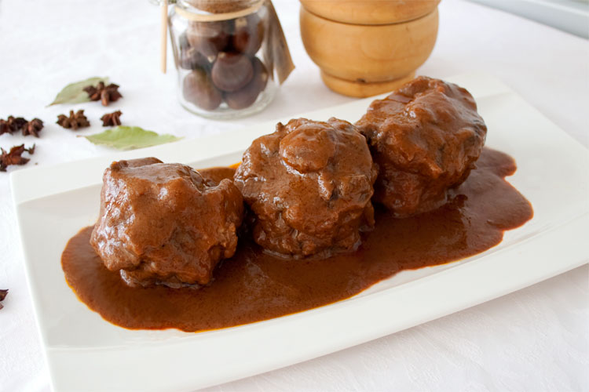

Rabo de Toro al estilo cordobés
Poner una cazuela grande al fuego con 3 o 4 cucharadas de AOVE y marcar las rodajas de rabo de toro hasta que se doren.
Retiramos las rodajas de rabo de toro y a continuación se sofrien 1 cebolla, 3 zanahorias, 1 pimiento rojo y 4 dientes de ajo, todo bien troceado. Una vez se sofria añadimos 4 tomates maduros. Aderezamos con 2 hojas de laurel y 2 ramas de tomillo. Dejamos reducir, y posteriormente agregamos 3 vasos de vino tinto.
Una vez comienze a hervir, se vuelve a añadir las rodajas de rabo de toro y se deja cocinar a fuego lento 4 horas.
Pasasdo este tiempo, se vuelven a retirar las rodajas de rabo de toro, se bate la salsa y se cuela para evitar grumos. Opcionalmente se puede añadir un poco de harina para espesar la salsa.
Se devuelve todo a la cazuela y se deja reducir hasta conseguir una salsa espesa y brillante.